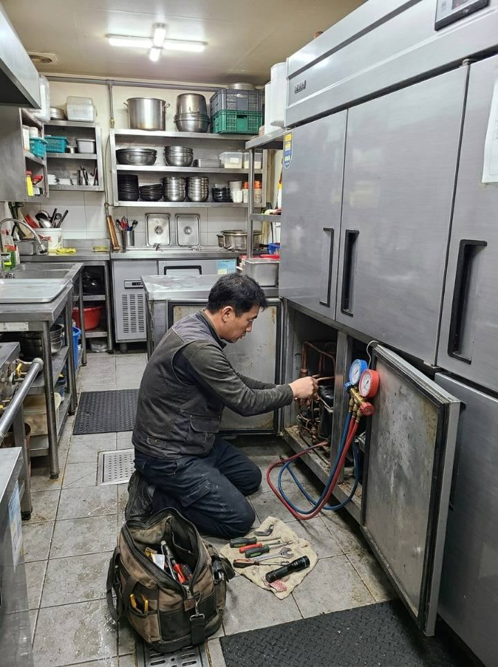

인천 미추홀구
업소용 냉장고
냉장·냉동고·주방 설비
누르면 바로 연결돼요
- 동네 업체 3곳 중 골라서
- 출발 전에 예상 금액 안내

미추홀구에서는 이렇게 다릅니다
식당·가게의 업소용 냉장고, 냉동고, 쇼케이스, 제빙기가 멈췄을 때 수리 업체를 연결합니다. 미추홀구(주안·숭의·용현·학익) 안에서 가까운 업체를 먼저 연결합니다.
미추홀구는 주안역과 제물포역 주변 상권, 인하대 근처 용현동 원룸촌, 숭의·도화동의 오래된 다세대 주택이 모여 있는 인천의 대표 원도심입니다. 재개발이 진행되는 곳과 오래된 빌라가 공존해 배관·전기 설비가 노후한 건물이 많은 편입니다.
미추홀구에는 반지하가 있는 다세대 빌라가 많아, 장마철 역류와 습기 문제가 다른 구보다 잦습니다. 재개발로 새 아파트가 들어서는 곳과 철거를 앞둔 노후 건물이 섞여 있어 같은 동 안에서도 상황이 크게 다릅니다.
오래된 업소용 냉장고는 컴프레서와 팬이 동시에 낡아, 수리비가 크면 중고 교체도 함께 검토합니다.
대학가 식당과 카페는 방학 전후로 설비 점검을 묶어 하면 고장을 줄일 수 있습니다.
영업 중 냉장고가 멈추면 재료 손실이 커서 당일 출동이 중요합니다. 식당 밀집 지역은 업소용 전문 기사를 우선 연결합니다.
생활권별로 보기
- 주안동
- 주안역 상권·빌라 밀집
- 숭의동
- 숭의역·다세대 주택
- 용현동
- 인하대 원룸·빌라
- 학익동
- 법원 주변·아파트
- 도화동
- 재개발 신축·노후 주택
- 문학·관교동
- 문학경기장·아파트
전화할 때 알려 주세요
- 증상과 언제부터 그랬는지, 가능하면 사진
- 골목 진입이 되는지, 차를 세울 곳이 있는지
- 건물주 동의 여부와 공용 현관 비밀번호
- 상호와 영업 시간, 작업 가능한 시간대
- 방문 가능한 시간과 받을 연락처
여름철 기온이 30도를 넘기 시작하면 컴프레서 과열 고장이 크게 늘어납니다. 봄에 응축기 청소를 해 두면 예방됩니다.
이런 일이면 부르세요
- 냉장 안 됨
- 냉동 안 됨
- 쇼케이스 고장
- 제빙기
- 성에·누수
- 소음
미추홀구 업소용 냉장고 비용
참고 범위예요. 업체가 출발하기 전에 전화로 예상 금액을 먼저 알려드립니다.
업체가 오기 전에
- 식재료 옮기기
온도가 오르기 시작하면 상하기 쉬운 재료부터 다른 냉장고로 옮기세요.
- 온도·소리 확인
표시 온도와 컴프레서 소리가 나는지 알려주시면 원인을 좁힐 수 있습니다.
- 뒤쪽 통풍 확인
냉장고 뒤나 아래 통풍구가 먼지로 막혔는지 봅니다.
문을 자주 여닫으면 온도가 더 빨리 올라갑니다. 기사 도착 전까지 문을 닫아 두세요.
자주 묻는 질문
밤에도 오나요?
식당 영업 시간을 고려해 늦은 시간 출동이 가능한 업체를 찾아 연결합니다.
업소용 냉장고 출장비는요?
점검 출장은 보통 5만~8만 원이고, 부품비는 따로 나옵니다.
원룸 세입자인데 직접 불러도 되나요?
됩니다. 다만 배관이나 보일러처럼 건물 설비 문제는 집주인이 비용을 내는 경우가 많아, 부르기 전에 집주인이나 관리인에게 먼저 연락해 두는 것이 좋습니다.